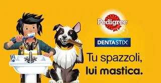
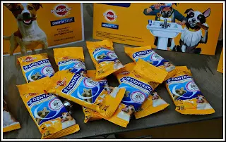
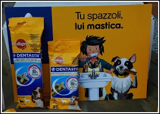
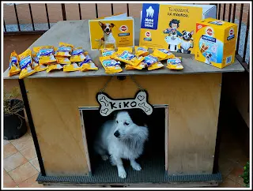
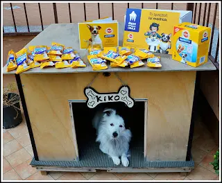
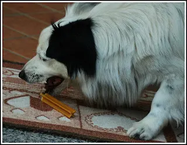
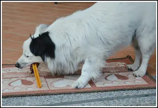
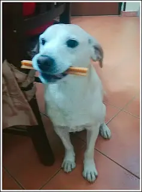
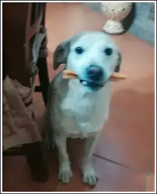

Pedigree - dentastix - snack per cani

Oggi parliamo di dentastix, un prodotto interamente dedicato ai nostri amici a quattro zampe.
Gli snack che aiutano l'alito dei nostri cuccioli, i dentastix di pedigree.
Sono stata infatti, selezionata come ambasciatrice su the Insiders per provare e testare i tanto conosciuti snack al gusto di pollo.


In pratica loro credono che siano semplici snack ma morsicando, masticando e sminuzzando questi bastoncini color carne, favoriscono la pulizia dei denti e li riparano dal tartaro.
L'80% dei cani di età superiore ai 3 anni soffre infatti, di problemi ai denti e gengive causati dalla formazione di placca e tartaro.
Grazie a dentastix questo problema può essere risolto.
Ci sono varie tipologie di dentastix per varie taglie di cani.
Sono snack che non fanno male in quanto sono caratterizzati con ingredienti attivi, a basso contenuto di grassi, senza zuccheri aggiunti e senza coloranti e aromi artificiali.




Ho fatto provare i dentastix sia al mio cucciolo ma anche ad un suo amichetto e devo dire che hanno molto gradito l'omaggio.


Adorano sgranocchiare questi gustosi snack e infatti fanno festa ogni volta che gliene diamo uno.
Credo sia importante prendersi cura dei nostri amici a quattro zampe in ogni aspetto della loro vita senza sottovalutare nessun particolare.